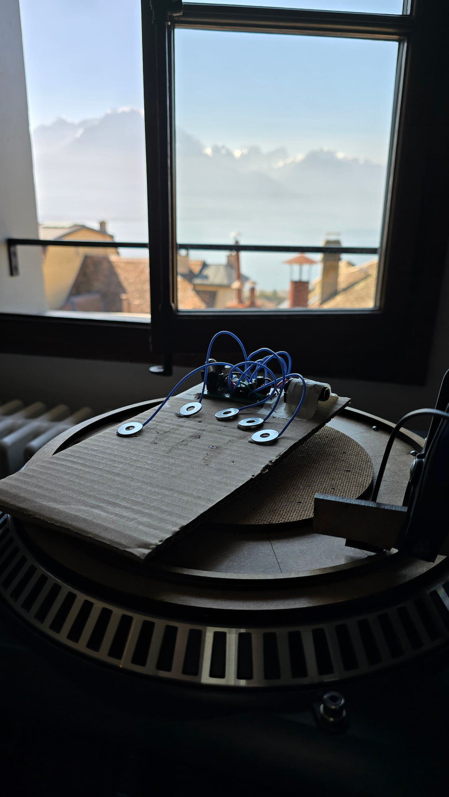
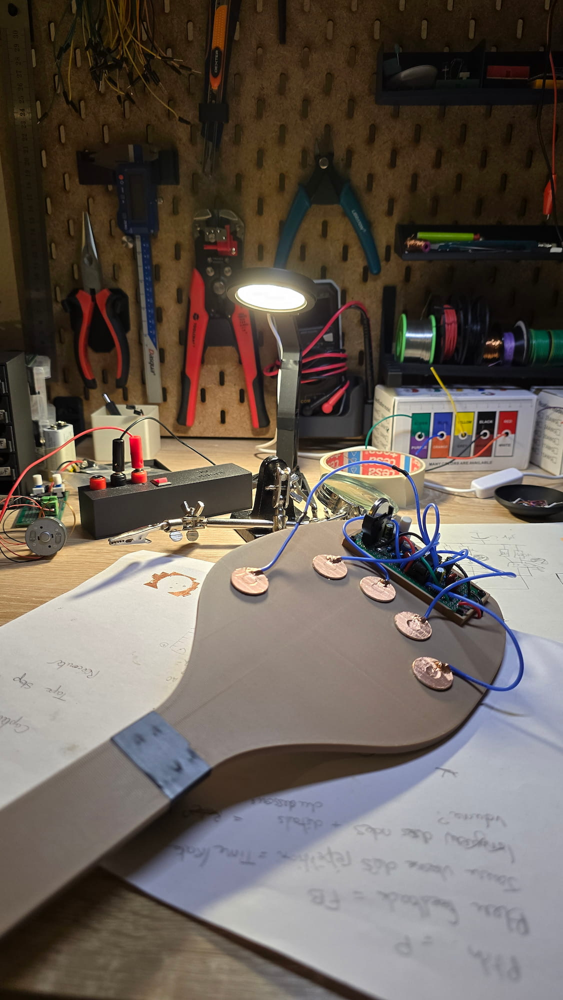
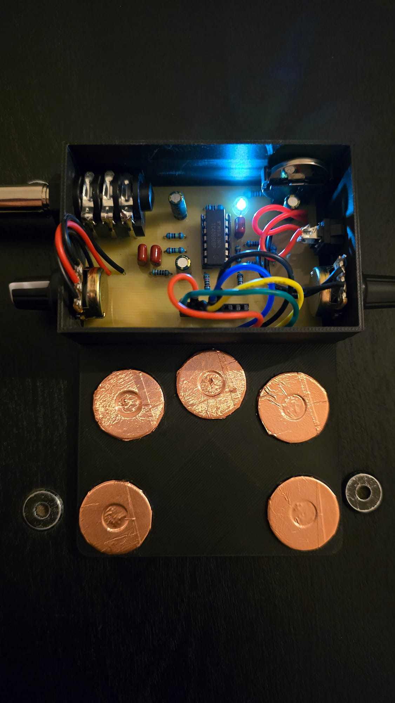
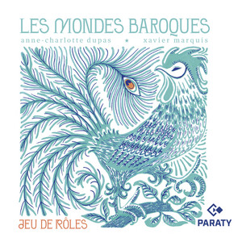
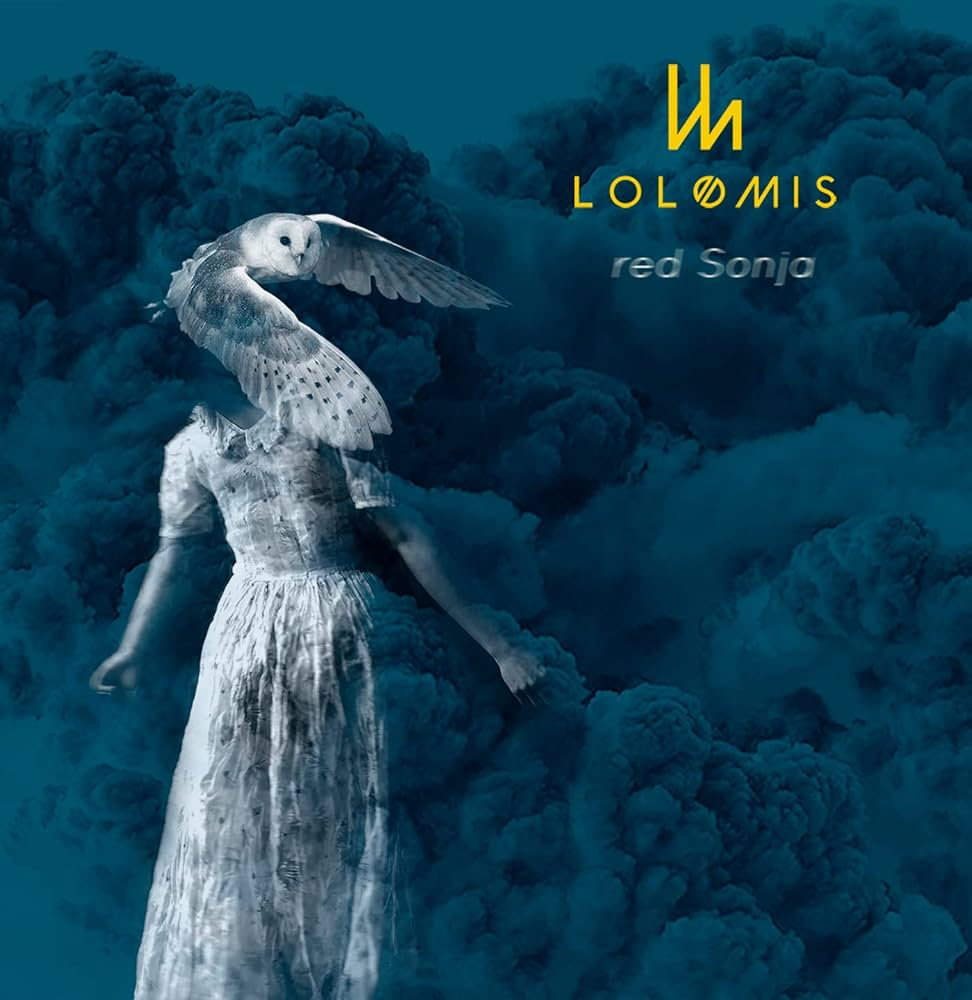
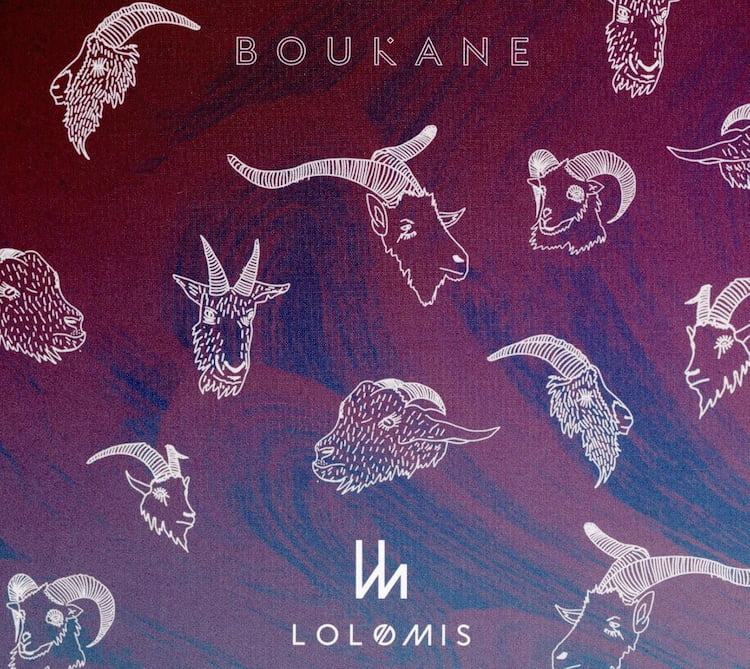
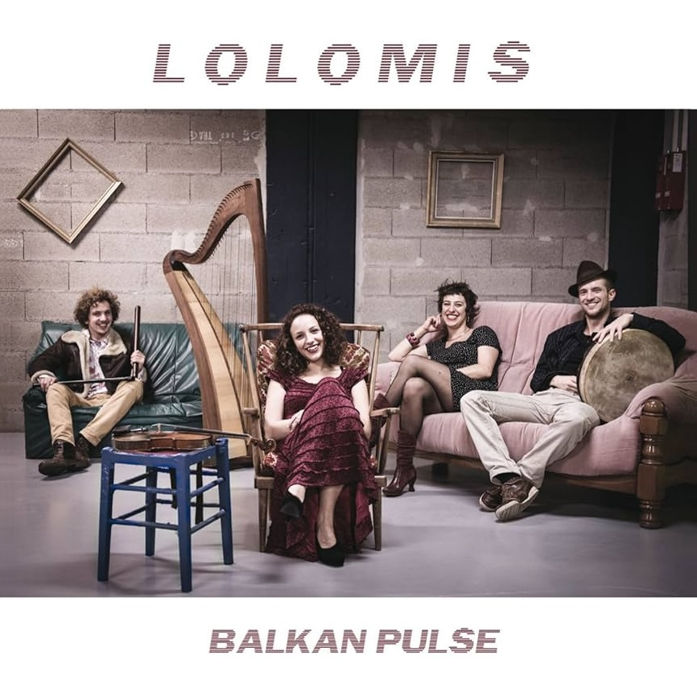
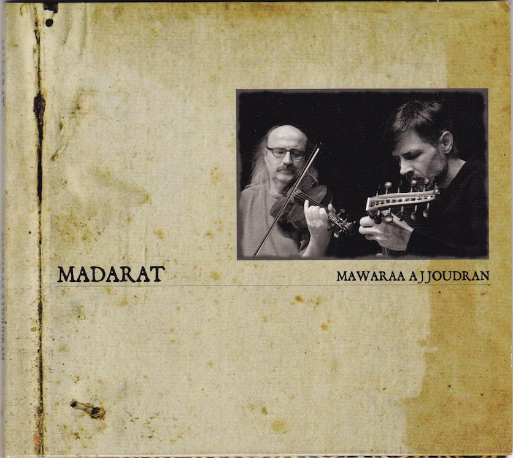
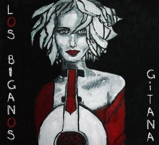

Développer des formes performatives fondées sur l'instabilité des systèmes analogiques pour créer des expériences d'écoute singulières et éphémères.
Ma recherche s'appuie sur l'instabilité des systèmes analogiques. Les micro-variations générées par les composants — tolérances, dérives, interactions électriques — produisent des comportements sonores imprévisibles. Ces phénomènes constituent le point de départ d'une écriture performative.
Le dispositif n'est pas un simple outil de production sonore : il agit comme un système actif dont le comportement influence la forme, la temporalité et l'intensité de la performance. L'instrument acoustique entre en dialogue avec cette instabilité, créant une tension constante entre maîtrise et imprévu.
Le·la musicien·ne intervient au sein de ce système instable en articulant comportement électronique et présence acoustique. La composition établit des règles d'interaction qui organisent leur confrontation et leur transformation réciproque.
Pensés pour des contextes de proximité et d'immersion, ces projets déplacent le cadre d'écoute habituel. La spatialisation, la distance, la circulation du son et la présence corporelle modifient la perception des micro-variations. L'espace et le public participent ainsi activement à la construction de la situation sonore.

01
02
03Un travail de lutherie autour de la modification de platines vinyles — détournement de fonction, altérations mécaniques et électroniques — pour produire des textures sonores autonomes.
La composition n'est pas envisagée comme une structure fermée mais comme un cadre d'action. Les partitions que je développe définissent des conditions d'émergence plutôt que des résultats : elles organisent les possibles sans les fixer.
L'aléatoire, l'imprévisible et la valorisation du moment présent en sont des piliers centraux. L'implication du·de la performeur·euse est constitutive de la pièce : ses décisions, ses réactions, son écoute transforment la forme en temps réel. La partition fixe des règles d'interaction, des zones de liberté, des seuils — elle génère une situation plutôt qu'elle ne prescrit un résultat.
Cette approche place le concert comme lieu de risque et de présence. Ce qui se passe ne peut être répété à l'identique : chaque performance est une occurrence unique, irréductible à sa notation.
Membre d'Eklekto Geneva Percussion Center depuis 2016, j'ai participé à de nombreuses créations originales et concerts en Suisse et à l'international, travaillant avec un large spectre de compositeur·rices de la scène contemporaine actuelle.





